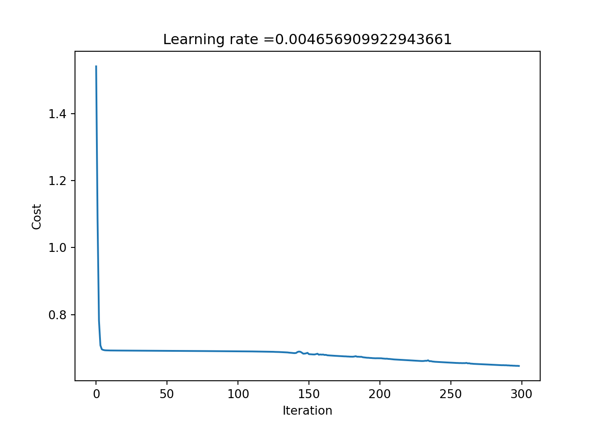

Going deeper
In this post, I follow up on the previous exercise and turn the shallow NN into a deep one by expanding the number of hidden layers to and arbitrary number.
I am using the same data as before, following the same cleaning procedure.
Deep NN with L layers
Parameter shapes
Going back to the shallow NN, there were a few matrices/vectors in the forward propagation:
- \(\mathbf{X}\): a \(m\times j\) matrix of \(j\) features/variables per \(m\) examples/observations
- \(\mathbf{W^{[1]}}\): a \(n^{[1]}\times j\) matrix, where \(n^{[1]}\) is the number of nodes in the 1st layer (\(L^{[1]}\))
- \(b^{[1]}\): a \(n^{[1]}\)-dimensional column vector of biases/intercepts of \(L^{[1]}\)
- a \(\mathbf{Z^{[1]}}\): a \(m\times n^{[1]}\) matrix of activations (regression outputs), where \(\mathbf{Z^{[1]}} = \mathbf{X}\mathbf{W^{[1]}}+b^{[1]}\)
- \(\mathbf{A^{[1]}}\): also a \(m\times n^{[1]}\) matrix of \(L^{[1]}\) outputs after applying the activation function \(g^{[1]}\), \(\mathbf{A^{[1]}} = g^{[1]}(\mathbf{Z^{[1]}})\)
- \(\mathbf{W^{[2]}}\): a \(m\)-dimensional column vector, since there is only a single node in the output layer
- \(b^{[2]}\): a scalar bias for the output layer.
- \(\mathbf{Z^{[2]}}\): a \(m\)-dimensional column vector of output layer activations, \(\mathbf{Z^{[2]}} = \mathbf{A^{[2]}}\mathbf{W^{[2]}}+b^{[2]}\)
- \(\mathbf{A^{[2]}} = \hat{y}\): also a \(m\)-dimensional column vector of model outputs after applying the activation function \(g^{[2]}\), \(\mathbf{A^{[2]}} = g^{[2]}(\mathbf{Z^{[2]}})\)
The above can be generalised for any layer \(l\) of a deep NN with \(L\) layers (\(l=0\) being the input layer) as:
| Parameter | Shape |
|---|---|
| \(\mathbf{Z^{[l]}}, \mathbf{A^{[l]}}\) | \((m, n^{[l]})\) |
| \(\mathbf{W^{[l]}}\) | \((n^{[l-1]}, n^{[l]})\) |
| \(b^{[l]}\) | \((n^{[1]}, 1)\) |
Note that \(\mathbf{A^{[0]}} = \mathbf{X}\), whereby \(n^{[0]}\) is the number of features. There is no \(\mathbf{Z^{[0]}}\), \(\mathbf{W^{[0]}}\), or \(b^{[0]}\).
Implemetation
def init_params(data: np.ndarray, L: int, n_nodes: list[int]) -> list[dict]:
# n = number of nodes in layer L_i
# n[0] number of features
# m = n of observations
n = [data.shape[1]]
n.extend(n_nodes)
m = data.shape[0]
params = [None] * (L + 1)
for l in range(0, L):
n_next = n[l+1]
params[l+1] = {
# init formula for ReLU to avoid vanishing/exploding
"W": np.random.randn(n[l], n_next) * np.sqrt(2 / n[l]),
"b": np.zeros(n_next).reshape(n_next, 1)
}
return paramsdef relu(x: float) -> float:
return np.maximum(0, x)
def sigmoid(x: float) -> float:
return 1.0 / (1 + np.exp(-x))
def relu_prime(x: float) -> float:
return (x > 0) * 1
def sigmoid_prime(x: float) -> float:
return sigmoid(x) * (1.0 - sigmoid(x))def forward(data: np.ndarray, params: list[dict], activation_funs: list[str], dropout_probs: list[float]):
L = len(params)
cache = [None] * L
cache[0] = {"A": data}
A = None
for l in range(1, L):
Z = np.dot(cache[l - 1]["A"], params[l]["W"]) + params[l]["b"].T
A = globals()[activation_funs[l]](Z)
# dropout
D = (np.random.rand(A.shape[0], A.shape[1]) < dropout_probs[l - 1]).astype(int)
A = (A * D) / dropout_probs[l - 1]
cache[l] = {
"W": params[l]["W"],
"b": params[l]["b"],
"Z": Z,
"A": A,
"D": D,
"fun": activation_funs[l]
}
return A, cachedef cost(y_hat, y) -> float:
m = y_hat.shape[0]
epsilon = 1e-5
cost = np.sum(y * np.log(y_hat + epsilon) + (1 - y) * np.log(1 - y_hat + epsilon))/m * -1
return float(np.squeeze(cost))
def plot_costs(costs, learning_rate):
plt.plot(np.squeeze(costs))
plt.ylabel('Cost')
plt.xlabel('Iteration')
plt.title("Learning rate =" + str(learning_rate))
plt.show()\[ \begin{aligned} d\mathbf{A^{[l \ne L]}} &= d\mathbf{Z^{[l+1]}\mathbf{W^{[l+1]\textsf{T}}}} \\ d\mathbf{A^{[L]}} &= \frac{y}{\hat{y}} -\frac{1 - y}{1 - \hat{y}} \\ d\mathbf{Z^{[l]}} &= d\mathbf{A^{[l]}}\odot g^{[l]\prime}(Z^{[l]})\\ d\mathbf{W^{[l]}} &= \frac{1}{m}\mathbf{A^{[l-1]\textsf{T}}}\odot d\mathbf{Z^{[l]}} \\ db^{[l]} &= \frac{1}{m}\sum_{i=1}^{m}dZ_{ij}^{[l]} \end{aligned} \]
def backward(cache: list[dict], y, dropout_probs: list[float]) -> list[dict]:
L = len(cache)
gradients = [None] * L
AL = cache[L - 1]["A"]
m = AL.shape[0]
dZ_prev = None
for i in range(L, 1, -1):
l = i - 1
A_prev = cache[l-1]["A"]
Z = cache[l]["Z"]
b = cache[l]["b"]
if i == L:
dA = - (np.divide(y, AL) - np.divide(1 - y, 1 - AL))
# dZ = (AL - y)
else:
W_plus1 = cache[l+1]["W"]
dA = np.dot(dZ_plus1, W_plus1.T)
# dropout
D = (np.random.rand(dA.shape[0], dA.shape[1]) < dropout_probs[l-1]).astype(int)
dA = (dA * D) / dropout_probs[l-1]
fun = cache[l]["fun"]
dZ = np.multiply(dA, globals()[fun + "_prime"](Z))
dW = np.dot(A_prev.T, dZ)/m
db = np.sum(dZ.T, axis=1, keepdims=True)/m
dZ_plus1 = dZ
gradients[l] = {
"W": dW,
"b": db
}
return gradientsdef update_params(params, grads, learning_rate):
L = len(grads)
for l in range(1, L):
params[l]["W"] -= learning_rate * grads[l]["W"]
params[l]["b"] -= learning_rate * grads[l]["b"]
returndef dnn_model(
X, Y,
nodes_per_layer: list[int],
activation_funs: list[str],
params: dict = None,
learning_rate: float = 1,
n_iter: int = 10000,
tol: float = 1e-5,
seed: int = None,
print_cost: bool = True,
plot_cost: bool = True,
dropout_probs = None
) -> dict:
start = time.time() # start timer
if seed is not None:
np.random.seed(seed)
assert all([foo in globals() for foo in activation_funs])
assert len(nodes_per_layer) == len(activation_funs)
if dropout_probs is not None:
assert len(nodes_per_layer) == len(dropout_probs)
else:
dropout_probs = [1] * len(nodes_per_layer)
n_layers = len(nodes_per_layer)
activation_funs.insert(0, None)
J = [1] * n_iter
all_learning_rates = [0] * n_iter
n_falling_cost = 0
if params == None:
params = init_params(X, n_layers, nodes_per_layer)
Y_hat = None
for i in range(0, n_iter):
Y_hat, cache = forward(X, params, activation_funs, dropout_probs)
J[i] = cost(Y_hat, Y)
if (J[i] <= J[i - 1]):
n_falling_cost += 1
if n_falling_cost % 10 == 0:
learning_rate *= 1.1
else:
n_falling_cost = 0
learning_rate /= 1.1
if i > 0 and abs(J[i - 1] - J[i]) < tol:
end = time.time()
elapsed = end - start
print (f'Model converged in {round(elapsed, 1)} seconds after {i + 1} iterations')
break
gradients = backward(cache, Y, dropout_probs)
update_params(params, gradients, learning_rate)
all_learning_rates[i] = learning_rate
if print_cost:
if (i == (n_iter)) or ((i + 1) % 100 == 0):
print (f'Cost after iteration {i + 1}: {J[i]}')
if i > 0 and i % 1000 == 0:
plot_costs(J[0:i], learning_rate)
if i == (n_iter - 1):
if (tol == 0):
print("All iterations completed")
else:
print("Model failed to converge")
Y_pred = (Y_hat > .5).astype(int)
acc = float((np.dot(Y.T, Y_pred) + np.dot(1 - Y.T, 1 - Y_pred)) / float(Y.size) * 100)
if plot_cost:
plot_costs(J[0:i], learning_rate)
return {"params": params, "cost": J[0:i], "activation_funs": activation_funs, "yhat": Y_hat, "prediction": Y_pred, "accuracy": acc, "alpha": all_learning_rates[0:i], "dropout_probs": dropout_probs}m1 = dnn_model(
X = X_train,
Y = Y_train,
nodes_per_layer = [100, 20, 7, 5, 1],
activation_funs = ["relu", "relu", "relu", "relu", "sigmoid"],
learning_rate=0.0075,
n_iter=300,
tol=1e-10,
# dropout_probs = [.5, .8, .8, 1, 1]
dropout_probs = [1, 1, 1, 1, 1]
)Cost after iteration 100: 0.6117485627940126
Cost after iteration 200: 0.5417625971260696
Cost after iteration 300: 0.48608098591430077
Model failed to converge
Testing the model
def predict(X, model):
yhat, steps = forward(
X,
model["params"],
model["activation_funs"],
dropout_probs = model["dropout_probs"]
)
return (yhat > .5).astype(int)pred = predict(X_test, m1)acc_test = float((np.dot(Y_test.T, pred) + np.dot(1 - Y_test.T, 1 - pred)) / float(Y_test.size) * 100)Our simple model correctly classified 83.2% of the floor plans in the training set and 70.1% of the floor plans in the test set.